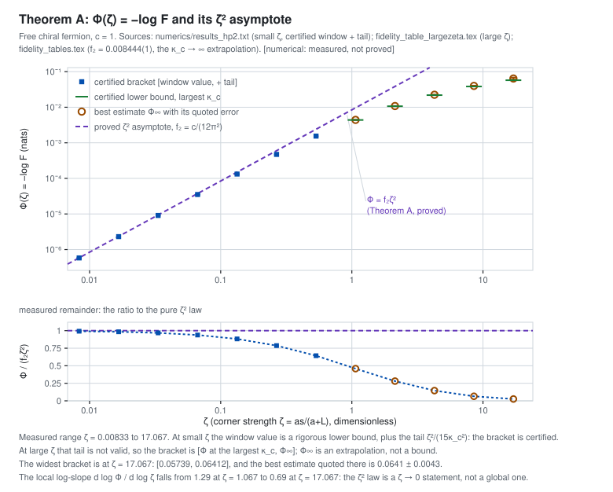

Module 2 — The quadratic law
The recovery error depends on the geometry through one cross ratio. As that cross ratio goes to zero the error is exactly quadratic, with a coefficient fixed by the central charge; over three decades of measurement you can watch the ratio settle on it, and then watch it leave again as the cross ratio grows.
limζ↓0 [−log F(ω, ω̃ζ)] / ζ² = c / (12π²), c = r. A data-processing lower bound in the Legendre form of the SLD metric, and a matching Uhlmann upper bound built from a Bogoliubov extension of the compression whose vacuum overlap is a Fredholm determinant. No interchange of limits and no tail bound are needed for the theorem.
Where this comes from: claim page · rigor/quadratic_limit.tex · rigor/uhlmann_upper_bound.tex
Two different things are drawn, and they are not interchangeable. A certified bracket is a rigorous enclosure: its lower end is the recovery error restricted to the spectral window ε < w < 1−ε, which is a proved lower bound for the full value. A best estimate is an extrapolation with an error bar — a measurement, not a theorem. The plot draws brackets as bars with a shaded interior and best estimates as filled dots.
Where this comes from: certified enclosures · the ultraviolet tail bound · numerics/certified/cert_tail_hp.py

The ratio Φ/ζ²
Theorem A is the statement that this ratio has a limit as ζ → 0, and that the limit is c/(12π²). The measured ratio is not constant — it is not supposed to be; only its limit is claimed.
Where the quadratic law stops
The local exponent d log Φ / d log ζ measured at large cross ratio. It drifts away from 2 as soon as ζ is of order one: the quadratic law is a statement about ζ → 0 and nothing else.
Claims this module carries
| claim | status |
|---|---|
| Theorem A: the quadratic law | refereed |
| f₂ = c/(12π²) | proved |
| the one-particle metrics gB, gKM | proved |
| the remainder: integer powers, c₃ = −0.99 | proved |
| the ultraviolet tail bound | proved |
| exact root fidelity from the symbols | proved |
| the type-III second-variation lemma | proved |
| certified enclosures of the windowed error | numerical |
| Φ at large ζ and the drifting exponent | numerical |